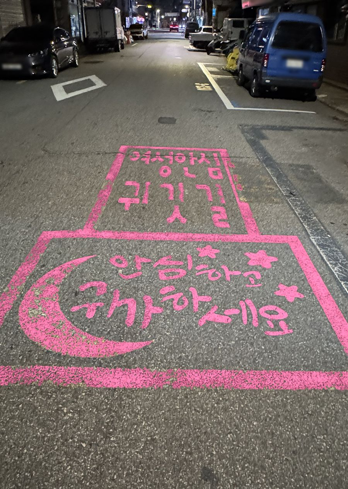
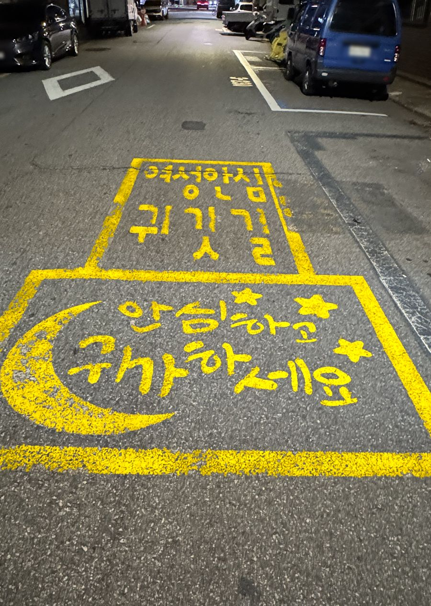
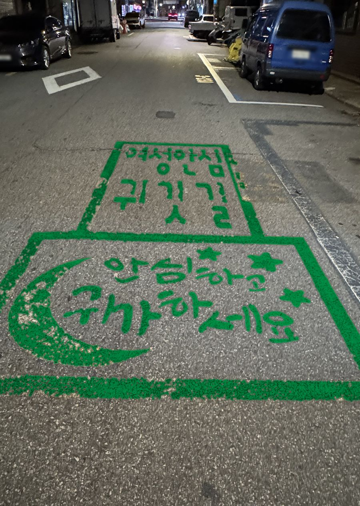
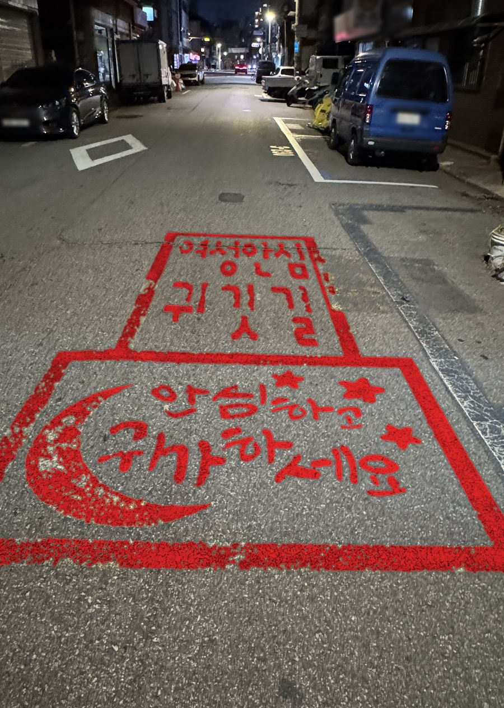

야간 보행환경의 색채 표식에 따른 지각된 안전감 및 인식 차이 탐색
Overview
같은 골목이라도 표식의 색이 달라지면 느끼는 안전감이 달라질까요? 야간 보행환경의 노랑·분홍·빨강·초록 표식을 비교하고, 사람들이 어떤 경험과 의미를 바탕으로 공간의 안전을 판단하는지 탐색한 디자인 리서치 프로젝트입니다.
Background
안심귀갓길의 노면 표식은 보행자에게 공간이 관리되고 있음을 알리는 시각적 신호입니다. 그러나 실제 표식의 색채는 지역마다 다르며, 공식 안전색에 포함되지 않는 분홍도 사용되고 있습니다. 제도적으로 정해진 색채의 의미가 실제 보행자의 인식과도 일치하는지, 익숙함과 사회적 경험은 안전 판단에 어떤 영향을 미치는지 살펴볼 필요가 있었습니다.
Purpose
표식의 색채에 따라 지각된 안전감과 불안감이 어떻게 달라지는지 살펴보고, 그 판단의 근거가 되는 경험과 연상을 탐색했습니다. 색채별 평가 점수와 함께 참여자의 설명을 분석하여, 사람들이 표식을 통해 읽어내는 관리의 신호와 사회적 의미를 이해하고자 했습니다.
Method
서울시 강북구 미아동의 안심귀갓길 야간 사진을 바탕으로, 문구·조명·공간 구조는 유지하고 표식의 색채만 변경한 네 가지 자극물을 제작했습니다. 성인 9명을 대상으로 약 30분간 비대면 개별 인터뷰를 진행하고, 안전감과 불안감의 5점 척도 평가 및 판단 이유를 수집했습니다. 응답은 참여자와 색채별로 비교하여 공통된 인식 범주를 도출했습니다.




Key Finding
참여자 평가에서 노랑은 가장 높은 안전감을, 분홍은 가장 낮은 불안감을 보였습니다. 노랑은 도로 표지와의 익숙함으로, 분홍은 여성 대상 정책 공간과의 연관성으로 해석되었습니다. 반면 빨강은 위험에 대한 연상을, 초록은 해당 이미지에서 낮은 시인성과 낯선 인상을 동반했습니다. 특히 분홍을 보호와 관리의 신호로 받아들이면서도 배제나 표적화 가능성을 우려하는 응답이 나타나, 높은 안전감 점수가 반드시 표식에 대한 긍정적인 해석을 뜻하지는 않음을 발견했습니다.
Project Goal
안전 표식의 색채를 평가할 때 시인성과 안전감 점수뿐 아니라, 사용자가 색채에 부여하는 의미와 공간 경험을 함께 고려할 수 있는 기초자료를 마련하고자 했습니다. 이를 통해 공공디자인에서 ‘잘 보이는 표식’과 함께 ‘어떻게 이해되는 표식인가’를 검토할 필요성을 제시했습니다.
Limitations
본 연구는 특정 골목의 정지 이미지와 성인 9명의 응답을 바탕으로 한 탐색적 연구로, 결과를 일반화하는 데 한계가 있습니다. 후속 연구에서는 참여자의 성별 균형과 공간 유형을 확대하고, 표식의 색채와 ‘여성’ 문구의 영향을 분리하여 안전 인식이 형성되는 과정을 검증할 필요가 있습니다.